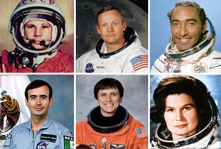
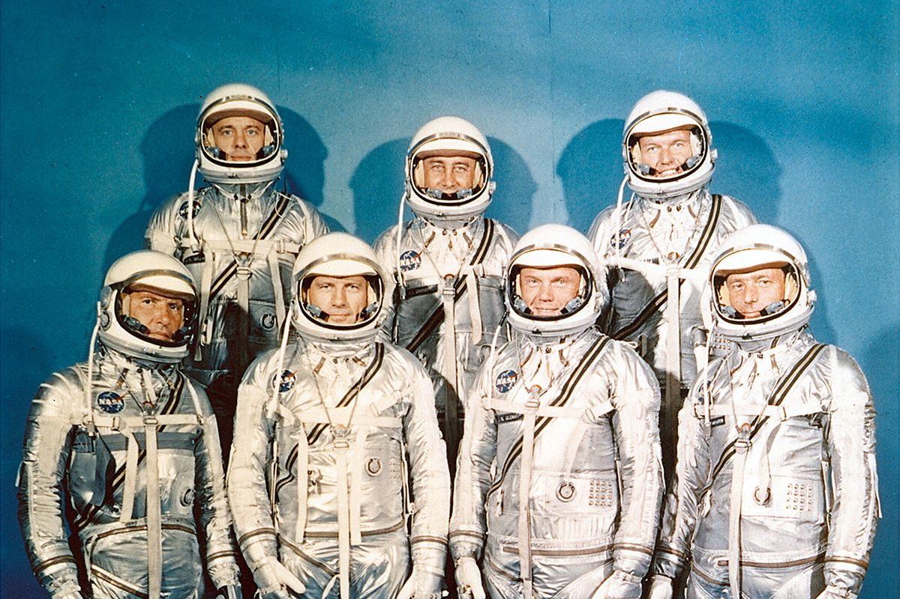
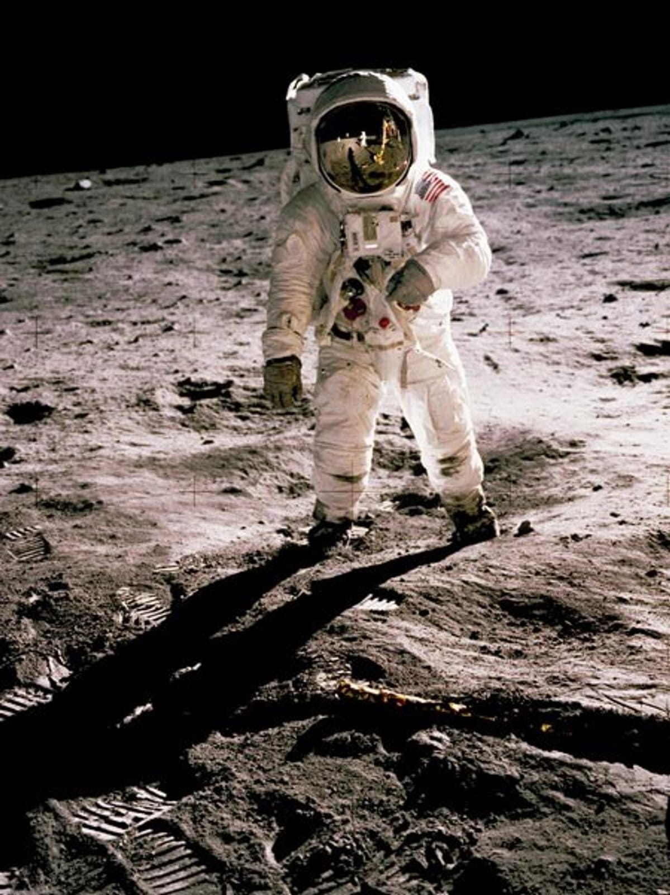

El primer ser humano en viajar al espacio fue el cosmonauta soviético Yuri Gagarin el 12 de abril de 1961, mientras que Neil Armstrong fue el primer hombre en pisar la Luna el 20 de julio de 1969.

1. El accidente del transbordador Challenger (28 de enero de 1986)
Qué pasó: El transbordador se desintegró en el aire 73 segundos después del despegue debido a la falla de una junta tórica (o-ring) sellada de forma deficiente, lo que provocó una fuga de gases que destruyó el tanque principal.
Tripulación (7 personas): Francis Scobee (comandante), Michael Smith (piloto), Ronald McNair, Ellison Onizuka, Judith Resnik, Gregory Jarvis y Christa McAuliffe (la primera maestra civil en viajar al espacio).
Desenlace: Fallecieron los siete integrantes al impactar la cabina contra el océano Atlántico.

La exploración de la Luna inició el 14 de septiembre de 1959, cuando la sonda soviética Luna 2 hizo impacto en su superficie. Desde entonces, hitos clave incluyen el programa Apolo de EE. UU. (1969-1972) —que llevó a los primeros humanos con el Apolo 11— y el actual programa Artemis de la NASA enfocado en el polo sur lunar

| Astronautas | Mision |
|---|---|
| Neil Armstrong y Buzz Aldrin | Apolo 11 |
| Pete Conrad y Alan Bean | Apolo 11 |
| Alan Shepard y Edgar Mitchell | Apolo 12 |
| Alan Shepard y Edgar Mitchell: | Apolo 14 |
| John Young y Charles Duke | Apolo 16 |
| Gene Cernan y Harrison Schmitt | Apolo 17 |